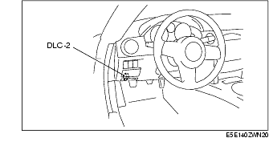

Workshop Manual ➭ ENGINE ➭ ON-BOARD DIAGNOSTIC[L8, LF] ➭ ON-BOARD DIAGNOSTIC TEST [L8, LF]
ON-BOARD DIAGNOSTIC TEST [L8, LF]
id0102b1801000
{: #wp1059780}
DTC Reading Procedure
- Connect the M-MDS to the DLC-2.{: #wp1059790}

- After the vehicle is identified, select the following items from the initial screen of the M-MDS.
• When using the IDS (laptop PC)
- Select the "Toolbox" tab. {: #wp1059844}2. Select "Self Test". {: #wp1059862}3. Select "Modules". {: #wp1059876}4. Select "PCM".
• When using the PDS (Pocket PC)
-
Select "Module Tests". {: #wp1059914}2. Select "PCM". {: #wp1059932}3. Select "Self Test".
-
Then, select the "Retrieve CMDTCs" and perform procedures according to directions on the M-MDS screen.
-
Verify the DTC according to the directions on the M-MDS screen.
• If any DTCs are displayed, perform troubleshooting according to the corresponding DTC inspection.
- After completion of repairs, clear all DTCs stored in the PCM, while referring to "AFTER REPAIR PROCEDURE".
Pending Trouble Code Access Procedure
- Connect the M-MDS to the DLC-2.{: #wp1060024}

- After the vehicle is identified, select the following items from the initial screen of the M-MDS.
• When using the IDS (laptop PC)
- Select the "Toolbox" tab. {: #wp1060078}2. Select "Self Test". {: #wp1060096}3. Select "Modules". {: #wp1060110}4. Select "PCM".
• When using the PDS (Pocket PC)
-
Select "Module Tests". {: #wp1060148}2. Select "PCM". {: #wp1060166}3. Select "Self Test".
-
Then, select the "Retrieve CMDTCs" and perform procedures according to directions on the M-MDS screen.
-
Retrieve the pending trouble codes according to the directions on the M-MDS screen.
Freeze Frame PID Data Access Procedure
- Connect the M-MDS to the DLC-2.{: #wp1060230}

- After the vehicle is identified, select the following items from the initial screen of the M-MDS.
• When using the IDS (laptop PC)
- Select the "Toolbox" tab. {: #wp1060284}2. Select "Self Test". {: #wp1060302}3. Select "Modules". {: #wp1060316}4. Select "PCM".
• When using the PDS (Pocket PC)
-
Select "Module Tests". {: #wp1060354}2. Select "PCM". {: #wp1060372}3. Select "Self Test".
-
Then, select the "Retrieve CMDTCs" and perform procedures according to directions on the M-MDS screen.
-
Retrieve the freeze frame PID data according to the directions on the M-MDS screen.
On-Board System Readiness Tests Access Procedure
- Connect the M-MDS to the DLC-2.{: #wp1060437}

- After the vehicle is identified, select the following items from the initial screen of the M-MDS.
• When using the IDS (laptop PC)
- Select the "Toolbox" tab. {: #wp1060491}2. Select "Powertrain". {: #wp1060509}3. Select "OBD Test Modes". {: #wp1060523}4. Select "Mode 1 Powertrain Data".
• When using the PDS (Pocket PC)
-
Select "OBD II Modes". {: #wp1060561}2. Select "Mode 1 Powertrain Data".
-
Then, select the "***SUP" and "***EVAL" PIDs in the PID selection screen.
-
Monitor those PIDs and check it system monitor is completed.
PID/DATA Monitor and Record Procedure
*Note*{: #wp1060639}
• The PID/DATA MONITOR function monitors the calculated value of the input/output signals in the PCM. Therefore, an output device malfunction is not directly indicated as a malfunction of the monitored value for the output device. If a monitored value of an output device is out of specification, inspect the monitored value of the input device related to the output control.
- Connect the M-MDS to the DLC-2.{: #wp1060661}

- After the vehicle is identified, select the following items from the initial screen of the M-MDS.
• When using the IDS (laptop PC)
- Select the "Toolbox" tab. {: #wp1060725}2. Select "Data Logger". {: #wp1060743}3. Select "Modules". {: #wp1060757}4. Select "PCM".
• When using the PDS (Pocket PC)
-
Select "Module Tests". {: #wp1060795}2. Select "PCM". {: #wp1060813}3. Select "Data Logger".
-
Select the PID from the PID table.
-
Verify the PID data according to the directions on the screen.
Diagnostic Monitoring Test Results Access Procedure
- Connect the M-MDS to the DLC-2.{: #wp1060871}

- After the vehicle is identified, select the following items from the initial screen of the M-MDS.
• When using the IDS (laptop PC)
- Select the "Toolbox" tab. {: #wp1060925}2. Select "Powertrain". {: #wp1060943}3. Select "OBD Test Modes". {: #wp1060957}4. Select "Mode 6 On-Board Test Results".
• When using the PDS (Pocket PC)
-
Select "OBD II Modes". {: #wp1060996}2. Select "Mode 6 On-Board Test Results".
-
Verify the diagnostic monitoring test result according to the directions on the screen.
Simulation Function Procedure
- Connect the M-MDS to the DLC-2.{: #wp1061049}
- After the vehicle is identified, select the following items from the initial screen of the M-MDS.
• When using the IDS (laptop PC)
- Select the "Toolbox" tab. {: #wp1061103}2. Select "Data Logger". {: #wp1061121}3. Select "Modules". {: #wp1061135}4. Select "PCM".
• When using the PDS (Pocket PC)
-
Select "Module Tests". {: #wp1061173}2. Select "PCM". {: #wp1061191}3. Select "Data Logger".
-
Select the simulation items from the PID table.
-
Perform the simulation function, inspect the operations for each parts.
• If there is no operation sound from the relay, motor, and solenoid after the simulation function inspection is performed, it is possible that there is an open or short circuit in the wiring harness, relay, motor or solenoid, or sticking and operation malfunction.